Lloyd Russell*、Anthony Hu*、Lorenzo Bertoni*、George Fedoseev*、Jamie Shotton、Elahe Arani、Gianluca Corrado*
Wayve（research@wayve.ai）
arXiv:2503.20523v1 [cs.CV]、2025年3月26日
翻訳について：原文 PDF は
43_GAIA_2_2503.20523.pdf（全 21 ページ）。本文、図の説明、図中ラベル、表、脚注、付録を訳出し、論文タイトルと参考文献は原文のまま掲載。図は原図を掲載し、英語ラベルの日本語訳を併記した。数式・数値・引用番号・コードの識別子は原文を維持。原文の記述に関する補足は「訳注」と明示し、本文と区別している。
脚注*：同等の貢献。順序は無作為。
生成モデルは複雑な環境をシミュレートするためのスケーラブルで柔軟なパラダイムを提供するが、現在の手法は、マルチエージェントの相互作用、きめ細かな制御、マルチカメラ間の一貫性といった、自動運転に固有の要件に十分に対処できていない。本論文では、これらの能力を単一の生成フレームワークに統合した潜在拡散世界モデルである GAIA-2（Generative AI for Autonomy）を提案する。GAIA-2 は、自車（ego-vehicle）のダイナミクス、エージェントの配置、環境要因、道路セマンティクスといった豊富な構造化入力を条件とする、制御可能な動画生成をサポートする。GAIA-2 は、地理的に多様な運転環境（英国、米国、ドイツ）にわたって、高解像度かつ時空間的に一貫したマルチカメラ動画を生成する。本モデルは、構造化された条件付けと外部の潜在埋め込み（例えば独自の運転モデルからのもの）の両方を統合し、柔軟で意味的に根拠のあるシーン合成を可能にする。この統合により、GAIA-2 は一般的な運転シナリオと稀な運転シナリオの両方のスケーラブルなシミュレーションを可能にし、自律システム開発の中核ツールとしての生成世界モデルの活用を前進させる。動画は https://wayve.ai/thinking/gaia-2 で公開している。
運転シナリオの現実的なシミュレーションは、自動運転システムの開発、学習、評価のための基礎的な要件である。生成世界モデルは、スケーラブルで多様な合成データの作成を可能にし、高コストな実世界データ収集への依存を減らすとともに、安全かつ再現可能な環境での頑健な評価を容易にする。主に視覚的なリアリズムと時間的な整合性に焦点を当てる汎用のテキストから動画（text-to-video）や画像から動画（image-to-video）のモデルとは異なり、自動運転の応用では、シーンのドメイン固有の側面に対するきめ細かな制御が求められる。
自動運転のための生成モデルは、自車の行動、他のエージェント（例えば車両、歩行者、自転車）の位置と動き、およびそれらの相互作用といった要因を正確にシミュレートしなければならない。さらに、これらのモデルは、地理的な位置、天候、時間帯、道路構成（例えば制限速度、車線数、横断歩道、信号機、交差点）、そして稀だが重大なエッジケースのシナリオといった文脈的属性に基づく条件付き生成を可能にしなければならない。自動運転車は知覚と意思決定のために複数の視点からの空間的・時間的に整合した入力に依存するため、一貫したマルチカメラ動画ストリームを生成する能力も不可欠である。こうしたドメイン固有の制約を満たすことは、既存の動画生成モデルでは十分に対処されていない独自の課題を提起する。
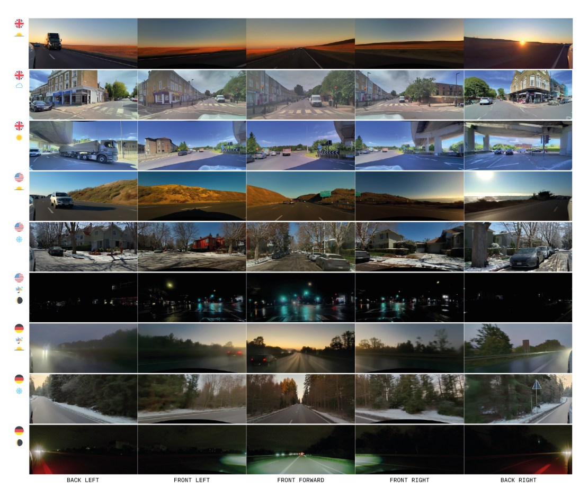
図1：GAIA-2 で可能な合成シナリオの多様性を示す、「ゼロから（from scratch）」の生成例の抜粋。
図中ラベル：BACK LEFT＝左後方、FRONT LEFT＝左前方、FRONT FORWARD＝正面、FRONT RIGHT＝右前方、BACK RIGHT＝右後方（左端のアイコンは国旗〔英国・米国・ドイツ〕と天候・時間帯を示す）
潜在動画生成における最近の進歩、特に連続［1, 2］または量子化［2, 3, 4］潜在空間を活用するものは、効率と視覚品質の改善をもたらしたが、現在の手法の適用範囲は依然として限定的である。自動運転の文脈では、いくつかのモデルがタスク固有の条件付け機構［5, 6, 7, 8, 9］を導入し、シナリオ要素に対するある程度の制御を可能にしてきた。しかし既存のモデルは通常、条件付けの種類が限られている、マルチカメラ生成ができない、空間的・時間的な整合性が低いなど、必要な能力の一部しかサポートしていない。そのため、包括的で統一された生成フレームワークは、この分野における未解決の課題のままである。
このギャップに対処するため、本論文では自動運転のための動画生成世界モデリングにおける大きな前進となる、ドメイン特化型の潜在拡散モデル GAIA-2 を提案する。GAIA-2 は、自車の行動、エージェントの振る舞い、シーンの幾何、環境要因に対するきめ細かな制御を伴って、高解像度のマルチカメラ運転シーンの条件付き生成をサポートすることで、先行研究を前進させる。本モデルは、448 × 960 の解像度で、時間的・空間的に一貫した最大 5 つのカメラストリームを生成でき、実世界の自動運転車システムで使われるさまざまなマルチカメラリグ構成に対応する。
GAIA-2 は、自車の運動学（例えば速度、曲率）、地理的地域（英国、米国、ドイツ）、時間帯、天候、そして車線の数と種類（例えば走行可能車線、バス車線、自転車車線）、横断歩道の有無、信号機、交差点のトポロジー（例えば一方通行路、ラウンドアバウト）といった道路レイアウト特徴の豊富な分類体系を含む、幅広いシーン属性による条件付けをサポートする。また、シーン内の動的エージェントの位置、向き、寸法を直接制御することもできる。この広範な条件付けパラメータの集合により、生成されるシナリオを精密に制御でき、典型的な運転状況と、頑健なシステム評価に不可欠なエッジケースの両方をシミュレートできる。
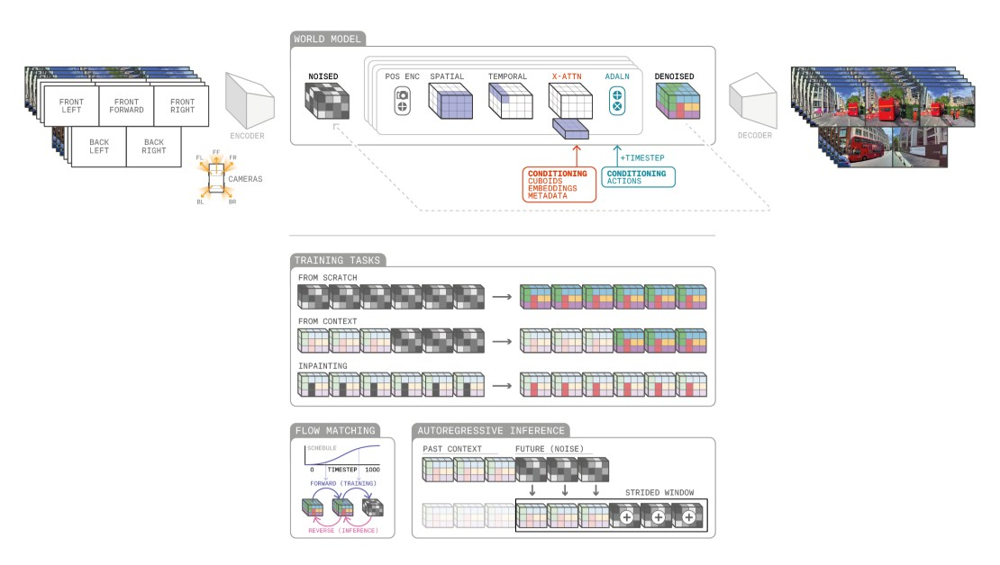
図2：GAIA-2 世界モデル。アーキテクチャの概略図は、全周カメラの各視点が動画トークナイザによって独立にエンコードされる様子を示している。結合されたマルチカメラ潜在表現は過去のコンテキストとして用いられ、サンプリングされたノイズと線形補間される。潜在表現を空間・時間分解型 Transformer に通す前に、位置エンコーディングとともにカメラパラメータを加える。条件付けはクロスアテンションと適応的レイヤー正規化（adaptive layer norm）によって実装される。潜在表現は、行動、3D バウンディングボックス、メタデータ、シナリオ埋め込みなどのさまざまな入力を条件として、未来の潜在表現へとデノイズされる。デノイズされた潜在表現は、その後、動画トークナイザによってピクセル空間へデコードされる。下段には、ゼロからの生成、コンテキストからのロールアウト、空間的インペインティングなど、GAIA-2 が学習するさまざまなタスクを示す。推論時には、重なりのあるストライドで、過去に生成したフレームを条件として新しいフレームを生成することで、GAIA-2 が学習したウィンドウ長を超えて生成できる。
図中ラベル：WORLD MODEL＝世界モデル、NOISED＝ノイズ付加済み、POS ENC＝位置エンコーディング、SPATIAL＝空間、TEMPORAL＝時間、X-ATTN＝クロスアテンション、ADALN＝適応的レイヤー正規化、DENOISED＝デノイズ済み、ENCODER＝エンコーダ、DECODER＝デコーダ、CAMERAS＝カメラ（FL/FF/FR/BL/BR＝左前方/正面/右前方/左後方/右後方）、CONDITIONING CUBOIDS EMBEDDINGS METADATA＝条件付け（直方体・埋め込み・メタデータ）、CONDITIONING ACTIONS＝条件付け（行動）、+TIMESTEP＝＋タイムステップ、TRAINING TASKS＝学習タスク、FROM SCRATCH＝ゼロから、FROM CONTEXT＝コンテキストから、INPAINTING＝インペインティング、FLOW MATCHING＝フローマッチング、SCHEDULE＝スケジュール、FORWARD (TRAINING)＝順方向（学習）、REVERSE (INFERENCE)＝逆方向（推論）、AUTOREGRESSIVE INFERENCE＝自己回帰推論、PAST CONTEXT＝過去コンテキスト、FUTURE (NOISE)＝未来（ノイズ）、STRIDED WINDOW＝ストライド付きウィンドウ
柔軟性と相互運用性を確保するため、GAIA-2 は、CLIP 埋め込みや、運転に特化した潜在表現を生成するよう学習された独自モデルを含む、外部の潜在空間による条件付けを可能にしている。この能力により、シーン内容に対する意味的な制御が可能になり、下流の計画モジュールや知覚モジュールとの統合が容易になる。GAIA-2 はさらに、ゼロからの生成、過去のコンテキストからの予測、インペインティングによる選択的なコンテンツ編集を含む、複数の動画生成モードをサポートする。
これらの能力を単一のフレームワークに統合することで、GAIA-2 は自動運転のための動画生成世界モデルにおいて新たな基準を打ち立てる。GAIA-2 は、多様な条件にわたる詳細で制御可能かつ現実的なシミュレーションを可能にし、自動運転システムのスケーラブルな学習と頑健な評価のための強力なツールを提供する。
GAIA-2 は、構造化された条件付け、マルチカメラ間の整合性、高い空間・時間解像度を備えたサラウンドビュー動画生成世界モデルである。アーキテクチャ（図2）は、動画トークナイザと潜在世界モデルという 2 つの主要コンポーネントで構成される。これらのモジュールが一体となって、GAIA-2 は豊富な条件付き制御のもとで、複数の視点にわたって現実的かつ意味的に整合した動画を生成できる。
動画トークナイザは、生の高解像度動画を、意味的・時間的構造を保ったまま、コンパクトな連続潜在空間へと圧縮する。このコンパクトな表現により、大規模で効率的な学習と生成が可能になる。続いて世界モデルは、過去の潜在状態、行動、および多様なドメイン固有の制御信号を条件として、未来の潜在状態を予測するよう学習する。世界モデルは、完全にゼロから新しい状態を生成したり、インペインティングによって動画コンテンツを修正したりするためにも使用できる。予測された潜在状態は、その後、動画トークナイザのデコーダを用いてピクセル空間へデコードされる。
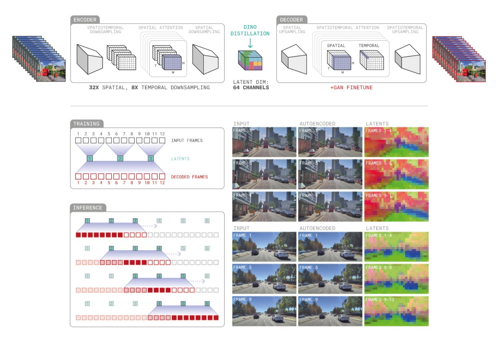
図3：GAIA-2 動画トークナイザ。アーキテクチャの概略図は、入力フレームが時空間的にダウンサンプリングされ、時間的に独立した潜在表現になる様子を示している。高い空間圧縮率は、潜在チャネル次元を増やすことで補われる。潜在表現は、時間的一貫性を確保するために完全な時空間アテンションを活用して、動画フレームへとデコードされる。長いシーケンスをオートエンコードするために、現在の潜在表現を過去と未来のコンテキストを用いてスライディングウィンドウ方式でデコードする、ローリング推論機構を用いる。例は、入力フレーム、デコードされたフレーム、および潜在空間の可視化を示している。潜在特徴の最初の 3 つの主成分を RGB 値に対応付けている。特筆すべきことに、潜在空間はフレーム間およびサンプル間で意味的に安定している。
図中ラベル：ENCODER＝エンコーダ、SPATIOTEMPORAL DOWNSAMPLING＝時空間ダウンサンプリング、SPATIAL ATTENTION＝空間アテンション、SPATIAL DOWNSAMPLING＝空間ダウンサンプリング、32X SPATIAL, 8X TEMPORAL DOWNSAMPLING＝空間 32 倍・時間 8 倍のダウンサンプリング、DINO DISTILLATION＝DINO 蒸留、LATENT DIM: 64 CHANNELS＝潜在次元：64 チャネル、DECODER＝デコーダ、SPATIAL UPSAMPLING＝空間アップサンプリング、SPATIOTEMPORAL ATTENTION＝時空間アテンション、SPATIOTEMPORAL UPSAMPLING＝時空間アップサンプリング、+GAN FINETUNE＝＋GAN ファインチューニング、TRAINING＝学習、INPUT FRAMES＝入力フレーム、LATENTS＝潜在表現、DECODED FRAMES＝デコードされたフレーム、INFERENCE＝推論、INPUT＝入力、AUTOENCODED＝オートエンコード結果、FRAME＝フレーム
多くの潜在拡散モデルとは対照的に、GAIA-2 ははるかに高い空間圧縮率（例えば、より一般的な 8× に対して 32×）を採用しており、これは潜在空間のチャネル次元を増やす（例えば 16 ではなく 64 チャネル）ことで相殺される。これにより、数は少ないが意味的により豊かな潜在トークンが得られる。その結果得られる利点は 2 つある。（1）潜在シーケンスが短くなることで推論が高速化し、メモリ効率が向上する。（2）モデルが動画コンテンツと時間的ダイナミクスを捉える能力が向上する。このパラメータ化の戦略は、コンパクトな潜在表現に関する先行研究［10, 11］に着想を得ている。
離散潜在変数に依存していた前身の GAIA-1［5］とは異なり、GAIA-2 は連続潜在空間を採用し、時間的な滑らかさと再構成の忠実度を改善している。さらに GAIA-2 は、自車の行動、動的エージェントの状態（例えば 3D バウンディングボックス）、構造化メタデータ、CLIP 埋め込みおよびシナリオ埋め込み、カメラ幾何をサポートする柔軟な条件付けインターフェースを導入している。この設計により、生成時にシーンの意味内容とエージェントの振る舞いを頑健に制御しつつ、視点間の一貫性と時間的整合性を確保できる。
動画トークナイザは、ピクセル空間の動画を、連続的かつ意味的に構造化されたコンパクトな潜在空間へと圧縮する。トークナイザは、非対称なエンコーダ・デコーダ構造（パラメータ数はそれぞれ 85M と 200M）をもつ空間・時間分解型 Transformer で構成される。エンコーダは、時間的に独立な、時空間的にダウンサンプリングされた潜在表現を抽出する。デコーダは、時間的一貫性のために時間的コンテキストを用いて、これらの潜在表現から全フレームの動画を再構成する。
入力動画 \( (\mathbf{i}_1, ..., \mathbf{i}_{T_v}) \) が与えられたとき、エンコーダ \( e_\phi \) は潜在トークン \( (\mathbf{z}_1, ..., \mathbf{z}_{T_L}) = e_\phi(\mathbf{i}_1, ..., \mathbf{i}_{T_v}) \) を計算する。ここで \( T_v \) は動画フレーム数、\( T_L \) は潜在表現の数である。動画フレームの空間解像度を \( H_v \times W_v \)、潜在トークンの空間解像度を \( H \times W \) と表す。エンコーダは空間方向に係数 \( \frac{H_v}{H} = 32 \)、時間方向に係数 \( \frac{T_v}{T_L} = 8 \) でダウンサンプリングする。潜在次元は \( L = 64 \) であり、\( (T_v, H_v, W_v) = (24, 448, 960) \) および \( (T_L, H, W) = (3, 14, 30) \) のとき、全体の圧縮率は \( \left(\frac{T_v \times H_v \times W_v \times 3}{T_L \times H \times W \times L} = 384\right) \) となる。
このダウンサンプリングは、入力フレームを時間方向に 2× のストライドで間引くことと、以下のモジュールによって実現される。
デコーダのアーキテクチャは次のとおりである。
エンコーダとデコーダの重要な違いは、エンコーダが連続する 8 枚の動画フレームを独立に 1 つの時間的潜在表現へ対応付けるのに対し、デコーダは時間的一貫性のために \( T_L = 3 \) 個の時間的潜在表現を \( T_v = 24 \) 枚の動画フレームへ同時にデコードする点である。推論時には、動画フレームはスライディングウィンドウでデコードされる。その論理を図3の「Training（学習）」と「Inference（推論）」の図に示す。
動画トークナイザは、ピクセル再構成損失と潜在空間損失の組み合わせで学習される。
視覚品質を改善するため、エンコーダを凍結したまま、3D 畳み込み識別器を用いた GAN 損失［4］と画像再構成損失で、デコーダをさらにファインチューニングする。識別器は、ベースチャネル 64、3D ブラープーリング［15］による時間・空間方向のストライド 2、チャネル倍率 [2, 4, 8, 8]、3D インスタンス正規化、傾き 0.2 の LeakyReLU をもつ残差 3D 畳み込みブロックの系列である。識別器はスペクトル正規化［16］と、softplus 活性化関数で実装したオリジナルの GAN 損失を用いる。
潜在世界モデルは、過去の潜在表現、行動、および豊富な条件付け入力を条件として、未来の潜在状態を予測する。これは 8.4B パラメータの空間・時間分解型 Transformer として実装され、安定性とサンプル効率のためにフローマッチング［17］を用いて学習される。
\( \mathbf{x}_{1:T} \in \mathbb{R}^{T \times N \times H \times W \times L} \) を入力潜在表現とする。ここで \( T \) は時間ウィンドウ、\( N \) はカメラ数である。入力潜在表現は、各カメラ視点をエンコーダ \( e_\phi \) で独立にエンコードすることで得られる。各タイムステップ \( t \) では、行動ベクトル \( \mathbf{a}_t \) と条件付けベクトル \( \mathbf{c}_t \) も与える。
世界モデルは隠れ次元 \( C \) の空間・時間分解型 Transformer である。各行動 \( \mathbf{a}_t \) は \( \mathbb{R}^C \) に埋め込まれ、条件付けベクトル \( \mathbf{c}_t \) は \( \mathbb{R}^{K \times C} \) に埋め込まれる。ここで \( K \) は条件付け変数の数に対応する。フローマッチング時刻 \( \tau \in [0, 1] \) も、正弦波エンコーディング［18］を用いて \( \mathbb{R}^C \) へ写像される。
フローマッチング時刻 \( \tau \) と行動 \( \mathbf{a}_t \) は適応的レイヤー正規化［19］を通じて各 Transformer ブロックに注入され、その他の条件付け変数 \( \mathbf{c}_t \) にはクロスアテンションを用いる。行動の条件付けは、クロスアテンションよりも適応的レイヤー正規化を用いたほうが正確であることがわかった。行動はすべての空間トークンに影響するため、適応的レイヤー正規化は、学習可能なアテンション機構に頼る代わりに、明示的な情報の通り道を提供する。
位置エンコーディングについては、（i）空間トークンの位置を正弦波埋め込みで、（ii）カメラのタイムスタンプを正弦波埋め込みとそれに続く小さな MLP で、（iii）カメラ幾何（歪み、内部パラメータ、外部パラメータ）を学習可能な線形層で、それぞれ独立にエンコードする。これらの位置エンコーディングはすべて、［20］と同様に、各 Transformer ブロックの冒頭で入力潜在表現に加算される。
世界モデルは、隠れ次元 \( C = 4096 \)、32 ヘッドの 22 個の空間・時間分解型 Transformer ブロックを含む。各 Transformer ブロックは、空間アテンション（空間とカメラにわたる）、時間アテンション、クロスアテンション、および適応的レイヤー正規化付きの MLP 層を含む。学習の安定性を高めるため、各アテンション層の前に query-key 正規化［21］を用いる。
学習時には、コンテキストフレーム数 \( t \in \{0, ..., T-1\} \) をランダムにサンプリングする。ここで \( t = 0 \) はゼロからの生成に対応する。また、フローマッチング時刻 \( \tau \in [0, 1] \) をあらかじめ定めた分布に従ってサンプリングする（詳細は 2.2.4 節を参照）。コンテキストの潜在表現 \( \mathbf{x}_{1:t} \) は変更せず、未来の潜在表現 \( \mathbf{x}_{t+1:T} \) をランダムなガウスノイズ \( \boldsymbol{\epsilon}_{t+1:T} \sim \mathcal{N}(\mathbf{0}, \boldsymbol{I}) \) と線形補間する。
\[ \mathbf{x}^{\tau}_{t+1:T} = \tau \mathbf{x}_{t+1:T} + (1-\tau)\boldsymbol{\epsilon}_{t+1:T} \tag{1} \]
速度目標ベクトル \( \mathbf{v}_{t+1:T} \) は、目標潜在表現とランダムノイズの差である。
\[ \mathbf{v}_{t+1:T} = \mathbf{x}_{t+1:T} - \boldsymbol{\epsilon}_{t+1:T} \tag{2} \]
世界モデル \( f_\theta \) は、コンテキスト潜在表現 \( \mathbf{x}_{1:t} \)、行動 \( \mathbf{a}_{1:T} \)、条件付け変数 \( \mathbf{c}_{1:T} \) を条件として、目標速度 \( \mathbf{v}_{t+1:T} \) を予測する。
\[ \hat{\mathbf{v}}_{t+1:T} = f_\theta(\mathbf{x}^{\tau}_{t+1:T} \mid \mathbf{x}_{1:t}, \mathbf{a}_{1:T}, \mathbf{c}_{1:T}, \tau) \tag{3} \]
モデルは、予測速度と目標速度の間の \( L_2 \) 損失で学習される。
\[ \mathcal{L}_{\text{world-model}} = \mathbb{E}_{t \sim P(t), \tau \sim p(\tau)}\left[ ||\mathbf{v}_{t+1:T} - \hat{\mathbf{v}}_{t+1:T}||^2 \right] \tag{4} \]
ここで \( t \sim P(t) \) はコンテキストフレームの分布、\( \tau \sim p(\tau) \) はフローマッチング時刻の分布を表す。
GAIA-2 は、生成シーンに対するきめ細かな制御を可能にする、豊富で構造化された条件付け入力をサポートする。これらの入力には、自車の行動、動的エージェントの属性、シーンレベルのメタデータ、カメラ構成、タイムスタンプ埋め込み、および CLIP や独自のシナリオ埋め込みといった外部の潜在表現が含まれる。条件付け機構は、適応的レイヤー正規化（行動用）、加算モジュール（カメラ幾何とタイムスタンプ用）、クロスアテンション（その他すべての変数用）の組み合わせによって世界モデルに統合される。
カメラパラメータ。内部パラメータ、外部パラメータ、歪みについてそれぞれ別々の埋め込みを計算し、それらを合計して統一されたカメラエンコーディングを形成する。内部パラメータについては、内部行列から焦点距離と主点座標を抽出して正規化し、共有の潜在空間へ射影する。外部パラメータと歪み係数も同様に、それぞれのエンコーダで処理してコンパクトな表現を得る。この構成により、モデルは実世界のカメラのばらつきを効果的に取り込むことができる。図5に、学習データセットにおいて最も一般的な上位 3 つのカメラリグ構成を示す。
動画の周波数。可変の動画フレームレートに対応するため、GAIA-2 はタイムスタンプによる条件付けを用いる。各タイムスタンプは、（i）現在時刻を基準に正規化して範囲 \( [-1, 1] \) にスケーリングし、（ii）正弦波関数で変換し（フーリエ特徴エンコーディング）、（iii）MLP に通して共有潜在空間のベクトルを生成する。このエンコーディングは低周波と高周波の両方の時間変動を捉え、異なるレートで記録された動画に対してモデルが効果的に推論できるようにする。
行動。自車の行動は速度と曲率でパラメータ化される。これらの量は複数の桁にまたがるため、正規化には対称対数変換 symlog［22］を用いる。
\[ \text{symlog}(y) = \text{sign}(y) \frac{\log(1 + s|y|)}{\log(1 + s|y_{\text{max}}|)} \tag{5} \]
ここで \( y \) は速度または曲率を表し、\( s \) はスケール係数である。曲率（単位：\( m^{-1} \)、範囲：0.0001〜0.1）については、小さい値を増幅するために \( s = 1000 \) を用いる。速度（単位：m/s、範囲：0〜75）については、値を km/h で表すために \( s = 3.6 \) を用いる。結果として \( [-1, 1] \) にスケーリングされたコンパクトな表現が得られ、学習の安定性が向上する。
動的エージェント。周囲のエージェントを表現するために、我々のデータセットで再学習した 3D 物体検出器［23］が予測した 3D バウンディングボックスを用いる。各ボックスは、エージェントの 3D 位置、向き、寸法、カテゴリをエンコードする。3D ボックスは 2D 画像平面に射影されて正規化され、\( f_i \in \mathbb{R}^{T \times N \times B \times 13} \) の条件付け特徴が得られる。ここで \( T \) は時間的潜在表現の数、\( N \) はカメラ数、\( B \) は 3D バウンディングボックスの最大数である（必要に応じてゼロパディングする）。各特徴次元は独立に埋め込まれ、単層の MLP によって集約される。
モデルの頑健性と汎化性を高めるため、学習時に特徴次元レベルとインスタンスレベルの両方でドロップアウトを実施する。具体的には、特徴次元を確率 \( p = 0.3 \) でドロップアウトし、推論時に不完全な情報のもとでもモデルが動作できるようにする。この設定により、例えば、インスタンスの 3D 位置を指定せずに 2D に射影したボックスで条件付けしたり、向きを省略して他の条件に基づき最も尤もらしい向きをモデルに予測させたりできる。
インスタンスレベルでは、各カメラについてフレーム \( t \in \{1, ..., T\} \) をサンプリングし、検出されたインスタンス数 \( N_{\text{instances}} \) を計算する。次に、条件付けに用いるインスタンス数 \( n \in \{0, ..., \min(B, N_{\text{instances}})\} \) をサンプリングし、このサンプルサイズを超えるインスタンスにドロップアウトを適用する。これにより、モデルは推論時に可変数の動的エージェントに適応できる。\( n \) は時間を通じて一定に保つが、インスタンスの追跡は用いないことに注意されたい。これにより、フレーム間の条件付け特徴が同じインスタンスに属するか異なるインスタンスに属するかを、モデルが自ら判断できる。
メタデータ。メタデータ特徴はカテゴリ変数であり、専用の学習可能な埋め込み層を用いて埋め込まれる。これには、国、天候、時間帯、制限速度、車線の数と種類（例えばバス車線、自転車車線）、横断歩道、信号機とその状態、一方通行の標識と交差点の種類が含まれる。これらの埋め込みにより、GAIA-2 はシーンレベルの特徴と、それらが振る舞いに与える影響との間の微妙な関係を学習でき、典型的なシナリオと稀なシナリオの両方のシミュレーションが可能になる。
CLIP 埋め込み。意味的なシーン条件付けを可能にするため、GAIA-2 は CLIP 埋め込み［24］による条件付けをサポートする。学習時には、動画フレームに対して画像エンコーダを用いて CLIP 特徴を抽出する。推論時には、これを自然言語プロンプトからの CLIP テキストエンコーダ出力に置き換えることができる。すべての CLIP 埋め込みは、学習可能な線形射影を用いてモデルの潜在空間へ射影される。これにより、自然言語または視覚的類似性を通じて、シーンの意味内容をゼロショットで制御できる。
シナリオ埋め込み。GAIA-2 は、運転固有の情報をエンコードするよう学習された社内の独自モデルから得られるシナリオ埋め込みによって条件付けすることもできる。これらの埋め込みは、自車の行動と、道路レイアウトやエージェントの配置といったシーンのコンテキストをコンパクトに捉える。シナリオベクトルは、Transformer に統合される前に、学習可能な線形層を介して潜在空間へ射影される。これにより、コンパクトな抽象表現から高レベルのシナリオ生成が可能になる。
フローマッチングの枠組みのもとで世界モデルを学習する際の重要な要因は、フローマッチング時刻 \( \tau \) の分布である。この分布は、実際の潜在表現に近い潜在入力と、大きく摂動された潜在入力をモデルがそれぞれどの程度の頻度で目にするかを決定する。
我々は、2 つのモードをもつ二峰性のロジット正規分布を用いる。
この二峰性の戦略により、低ノイズ領域と高ノイズ領域の両方で学習が効果的になり、汎化性能とサンプル品質が向上する。
加えて、［25］に従い、入力潜在表現 \( \mathbf{x}_t \) をその平均 \( \mu_x \) と標準偏差 \( \sigma_x \) で正規化し、その大きさが加えるガウスノイズの大きさと一致するようにする。これにより信号と摂動の間のスケールの不一致が避けられる。そうしなければ学習のダイナミクスが劣化しうる。
GAIA-2 は、自動運転のための動画生成の多様な要求に応えるよう特別にキュレーションされた、大規模な社内データセットで学習される。データセットは、2019 年から 2024 年の間に収集された、各 2 秒の約 2,500 万本の動画シーケンスで構成される。地理的・環境的に多様な運転条件を網羅するため、記録は英国、米国、ドイツの 3 か国で取得された。
実世界の自動運転の複雑さを捉えるため、データ収集には 3 種類の乗用車モデルと 2 種類のバンを含む複数の車両プラットフォームを用いた。各車両には 5 台または 6 台のカメラが装備され、360 度の包括的なサラウンドビューを提供するよう構成された。カメラシステムの撮像周波数は 20 Hz、25 Hz、30 Hz とさまざまであり、多様な時間解像度をもたらしている。このばらつきは、実際の自動運転車に配備されているセンサー構成の不均一性を反映しており、異なる入力レートとハードウェア仕様にわたって汎化する GAIA-2 の能力を支えている。
このデータセットの重要な特徴は、データ収集期間を通じたカメラ配置のばらつきである。時間とともに、カメラの位置とキャリブレーションはプラットフォームごとに調整され、幅広い空間構成がもたらされた。この多様性は、異なるカメラリグにわたって汎化するための強力な学習信号を提供する。これは、自動運転領域におけるスケーラブルな合成データ生成の重要な要件である。
データセットはまた、多様な天候条件、時間帯、道路の種類、交通環境を含む幅広い運転シナリオを網羅している。この複雑さにわたる網羅性を確保するため、学習データを個々の特徴だけでなく、それらの同時確率分布に基づいて明示的にバランス調整する。この手法は、例えば特定の地域における特定の照明・天候条件や、特定の道路種別に固有の振る舞いといった、現実的な共起をモデル化することで、より代表性の高い学習信号を可能にする。冗長な学習サンプルを防ぐため、選択するシーケンス間に最小の時間ストライドを課し、自然な分布を保ちながら重複のリスクを低減する。
評価のために、地理的にホールドアウトした検証戦略を実施する。特定の検証用ジオフェンスを定義し、特定の地域を学習セットから完全に除外する。これにより、モデルの評価は未見の場所で行われることになり、異なる環境にわたる汎化性能のより厳密な評価が得られる。
まとめると、このデータセットは GAIA-2 を学習するための頑健な基盤を提供する。その広範な時間的・空間的な網羅性、車両とカメラ構成の多様性、そして原理に基づいた検証設定により、多様な実世界の条件にわたって現実的かつ制御可能な運転動画を生成できる生成世界モデルの開発に、他に類を見ないほど適している。
本節では、GAIA-2 の 2 つのコンポーネントである動画トークナイザと世界モデルの両方の学習手順について述べる。各コンポーネントは、それぞれの目的を最適化するために、大規模な計算インフラと調整された損失構成を用いて独立に学習される。
動画トークナイザ。動画トークナイザは、128 基の H100 GPU を用い、バッチサイズ 128 で 300,000 ステップ学習した。入力シーケンスは、元の撮像周波数（20、25、または 30 Hz）でサンプリングした \( T_v = 24 \) 枚の動画フレームで構成した。フレームからはサイズ 448 × 960 のランダムな空間クロップを抽出した。各学習サンプルについて、利用可能な \( N = 5 \) 個の視点からカメラ視点を 1 つランダムに選択した。特筆すべきこととして、各カメラストリームは独立にエンコードした。
トークナイザは時間方向に 8×、空間方向に 32× のダウンサンプリングを行い、潜在次元 \( L = 64 \) の圧縮表現を生成する。実効的な全体圧縮率は約 400 である（\( \frac{24 \times 448 \times 960 \times 3}{3 \times 14 \times 30 \times 64} \simeq 400 \)）。（訳注：この式の値は正確には 384 であり、2.1.1 節の記述と一致する。ここでは概数として 400 と記されている。）
トークナイザの損失関数は、画像再構成項、知覚項、意味的整合項の組み合わせで構成される。（1）重み 0.1 の、潜在空間における DINO v2（Large）［14］蒸留。（2）滑らかさを促すための、低い重み 1e−6 での、潜在分布と単位ガウス分布の間の KL ダイバージェンス［1］。（3）ピクセルレベルの損失：\( L_1 \) 損失（重み 0.2）、\( L_2 \) 損失（重み 2.0）、および LPIPS 知覚損失［26］（重み 0.1）。
学習全体を通じて、トークナイザのパラメータ \( \phi \) の指数移動平均（EMA）を、減衰係数 0.9999 で、学習の各ステップで更新しながら保持した。推論時には EMA の重みを用いた。
学習の最適化には AdamW を用いた。設定は、基本学習率 1e−4 までの 2,500 ステップのウォームアップと、最終学習率 1e−5 までの 5,000 ステップのクールダウン、Adam の betas [0.9, 0.95]、重み減衰 0.1、勾配クリッピング 1.0 である。初期学習の後、トークナイザのデコーダを、GAN 損失（重み 0.1）と従来の再構成損失を組み合わせて、さらに 20,000 ステップファインチューニングした。識別器は学習率 1e−5 で最適化した。
世界モデル。潜在世界モデルは、256 基の H100 GPU 上で、バッチサイズ 256 で 460,000 ステップ学習した。入力は、元の撮像周波数（20、25、または 30 Hz）、空間解像度 448 × 960、\( N = 5 \) カメラにわたる 48 枚の動画フレームで構成した。これらの動画を潜在空間へエンコードすると、\( T \times N \times H \times W = 6 \times 5 \times 14 \times 30 = \) 12,600 個の入力トークンに相当する。
汎化を促すため、異なる学習タスクを次のようにサンプリングした：ゼロからの生成 70%、コンテキストからの予測 20%、空間的インペインティング 10%。モデルを正則化し、classifier-free guidance を可能にするため、条件付け変数をランダムにドロップした。個々の条件付け変数はそれぞれ独立に確率 80% でドロップし、すべての変数を同時に確率 10% でドロップした。
部分観測に対する頑健性を高めるため、入力カメラ視点を確率 10% でランダムにドロップした。潜在トークンは、トークナイザの学習中に経験的に求めた固定の平均 \( \mu_x = 0.0 \) と標準偏差 \( \sigma_x = 0.32 \) を用いて正規化した。
トークナイザと同様に、世界モデルのパラメータ \( \theta \) の EMA を、減衰係数 0.9999 で、学習の各ステップで更新しながら保持した。推論には EMA の重みを用いた。オプティマイザは AdamW で、設定は、初期学習率 5e−5 までの 2,500 ステップのウォームアップと、学習期間全体にわたる最終学習率 6.5e−6 までのコサイン減衰、Adam の betas [0.9, 0.99]、重み減衰 0.1、勾配クリッピング 1.0 である。
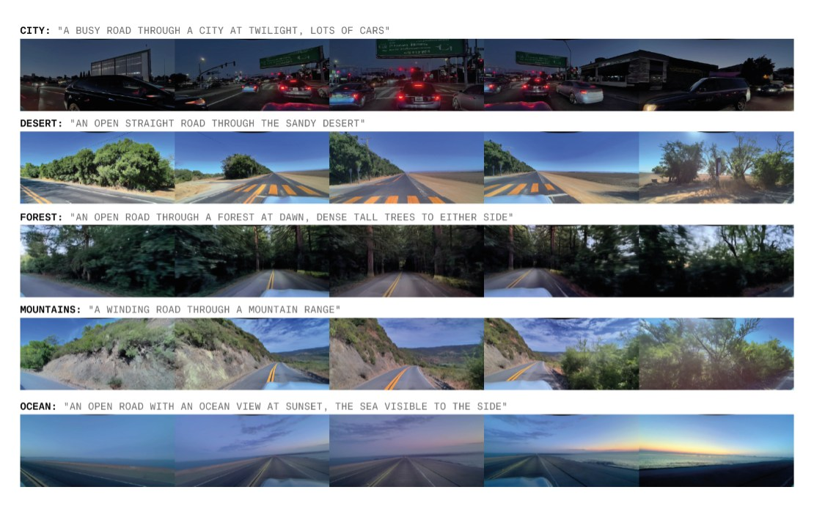
図4：CLIP による条件付け。CLIP テキストエンコーダでエンコードしたテキストプロンプトで GAIA-2 の生成を条件付けることで、環境的特徴をきめ細かく制御できる。
図中ラベル：CITY: "A BUSY ROAD THROUGH A CITY AT TWILIGHT, LOTS OF CARS"＝都市：「夕暮れの都市を通る混雑した道路、多数の車」、DESERT: "AN OPEN STRAIGHT ROAD THROUGH THE SANDY DESERT"＝砂漠：「砂の砂漠を通る開けた直線道路」、FOREST: "AN OPEN ROAD THROUGH A FOREST AT DAWN, DENSE TALL TREES TO EITHER SIDE"＝森林：「夜明けの森を通る開けた道路、両側に密集した高い木々」、MOUNTAINS: "A WINDING ROAD THROUGH A MOUNTAIN RANGE"＝山岳：「山脈を抜ける曲がりくねった道路」、OCEAN: "AN OPEN ROAD WITH AN OCEAN VIEW AT SUNSET, THE SEA VISIBLE TO THE SIDE"＝海：「日没時に海が見える開けた道路、横に海が見える」
GAIA-2 モデルは、動画生成シナリオにわたる柔軟性と制御性を示す、さまざまな推論タスクをサポートする。これらのタスクは、潜在空間で動作する共通のデノイズ過程と、それに続く動画トークナイザによるピクセル空間へのデコードによって統一されている。
推論タスク。モデルの異なる能力をそれぞれ示す、4 つの主要な推論モードを考える。
これらのモードは、ノイズ、コンテキスト、既存動画のいずれから開始する場合でも、GAIA-2 が多種多様なシーン操作タスクのための汎用シミュレータとして機能できることを示している。
推論時のノイズスケジュール。すべての推論タスクにおいて、［20］で導入された線形・二次ノイズスケジュールを採用する。このスケジュールは、大まかなシーンレイアウトと動きのパターンを捉えるのに効果的な、線形に間隔をとったノイズレベルから始まる。後半の段階では、スケジュールは二次的に間隔をとったステップへと移行し、高周波の視覚的詳細をより効率的に洗練できるようにする。このハイブリッドな手法は、生成品質と計算効率の両方を改善する。我々の実験では、固定の 50 デノイズステップを用いる。
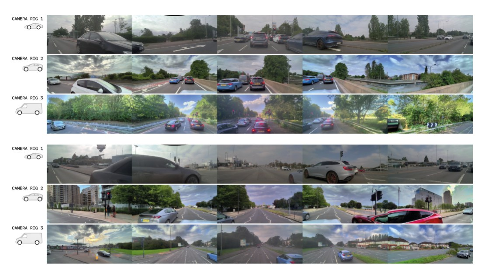
図5：複数リグでの動画生成。GAIA-2 は、空間的・時間的な一貫性を保ちながら、さまざまな車両プラットフォームとカメラ構成をサポートする。示した 2 つの例には、スポーツカー、SUV、大型バンのカメラ配置が含まれる。
図中ラベル：CAMERA RIG 1／2／3＝カメラリグ 1／2／3
Classifier-Free Guidance。classifier-free guidance（CFG）は、推論時にデフォルトでは使用しない。しかし、稀なエッジケースや通常とは異なるエージェント配置（例えば図11）を含むような、困難なシナリオや分布外のシナリオでは、シーンの複雑さに応じて 2 から 20 の範囲のガイダンススケールで CFG を有効にする。
エージェント固有の領域に対応する潜在トークンが事前にわかっている、動的エージェントの条件付けを含むシナリオでは、空間的に選択的な CFG を適用する。この場合、ガイダンスは条件付け（例えば 3D バウンディングボックス）の影響を受ける空間位置にのみ適用され、シーンの残りの部分に不必要な影響を与えることなく、対象領域の生成品質を高める。この的を絞った手法により、全体の整合性を保ちながら、シーン要素をより精密に制御できる。
GAIA-2 を、その生成の忠実度、制御性、および自動運転における合成データ生成への適性を浮き彫りにする定性的な例と定量的な指標によって評価する。生成動画の例の包括的なセットは https://wayve.ai/thinking/gaia-2 で公開している。
実世界データの拡張。GAIA-2 は、実世界のシーケンスを視覚的・文脈的に多様化させるさまざまな手法によって、データセットの拡張を可能にする。
多様なシナリオの生成。GAIA-2 は、複数の国、天候条件、時間帯、道路レイアウトにまたがる、非常に多様な運転シナリオの生成をサポートする。メタデータによる構造化された条件付けに加えて、GAIA-2 は CLIP 埋め込みによって誘導することができ、ラベルでは明示的に捉えられないシーンの意味内容の制御が可能になる。これには、都市、山岳、沿岸のシーンといった地理的・環境的なコンテキストが含まれる（図4）。
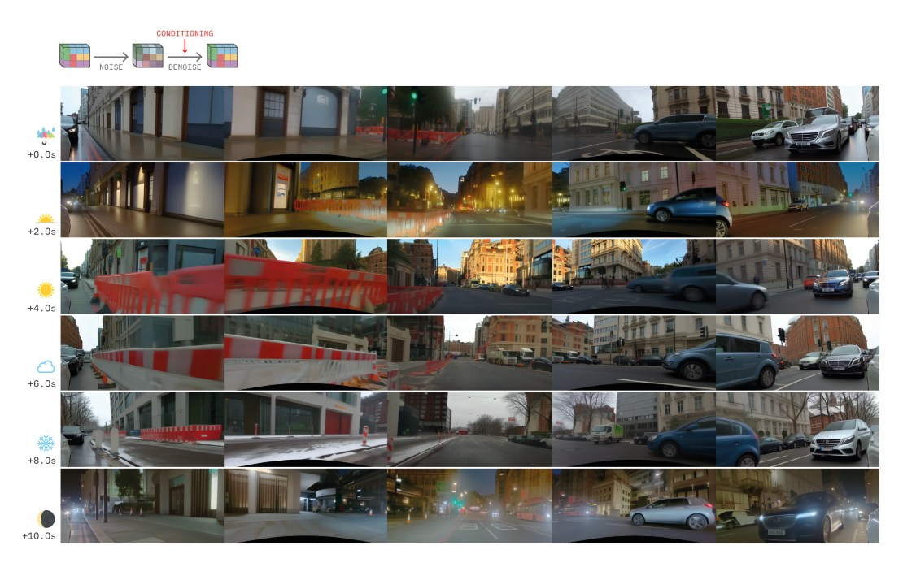
図6：部分的なノイズ付加による拡張。動画フレームに部分的にノイズを加えてデノイズすることで、GAIA-2 は意味内容と自車の行動を保ちながら、実動画を天候や時間帯といった異なる環境設定のもとでの多様なバージョンへと変換する。
図中ラベル：NOISE＝ノイズ付加、CONDITIONING＝条件付け、DENOISE＝デノイズ、+0.0s〜+10.0s＝経過時間（秒）（左端のアイコンは各行の天候・時間帯条件：雨、日没、晴天、曇り、雪、夜間）
さらに、学習中にさまざまなカメラ構成に触れているため、GAIA-2 は異なる車両形態（embodiment）にわたる運転動画をシミュレートできる。カメラパラメータを条件とすることで、スポーツカー、SUV、大型バンに搭載されたリグについて、視点間の空間的・時間的な一貫性を維持する（図5）。
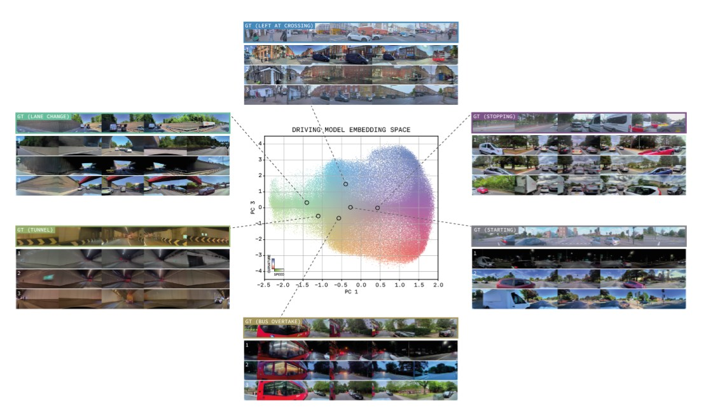
図7：シナリオ埋め込みによる条件付け。独自の運転モデルからのシナリオ埋め込みにより、GAIA-2 は実世界のシナリオから、多様でありながら意味的に一貫したバリエーションを生成できる。各シナリオタイプについて、最上段は埋め込みの元となった実データを示し、下の 3 段は埋め込みを条件付けとして誘導されたその合成バリエーションを示す。多様性を制御するために、国、天候、時間帯、カメラパラメータといった追加の条件付けも任意に適用する。
図中ラベル：DRIVING MODEL EMBEDDING SPACE＝運転モデルの埋め込み空間、PC 1／PC 3＝第 1／第 3 主成分、CURVATURE＝曲率、SPEED＝速度、GT (LEFT AT CROSSING)＝正解データ（交差点で左折）、GT (LANE CHANGE)＝正解データ（車線変更）、GT (STOPPING)＝正解データ（停止）、GT (TUNNEL)＝正解データ（トンネル）、GT (STARTING)＝正解データ（発進）、GT (BUS OVERTAKE)＝正解データ（バスの追い越し）、1〜3＝合成バリエーション
安全上重要なシナリオの生成。GAIA-2 は、実世界ではまれにしか起こらない、稀だが安全上重要なシナリオを生成できる。安全上重要な状況として、自車エージェントによって引き起こされるものと、他のエージェントによって引き起こされるものの 2 つのクラスを考える。
インペインティング。GAIA-2 は時空間的なインペインティングをサポートし、選択的なコンテンツ編集を可能にする。マスク領域と対応するエージェントレベルの条件付けが与えられると、GAIA-2 は無関係な領域を乱すことなく、既存のコンテキストにエージェントをシームレスに挿入する（図12）。
これらの定性的な結果は、きめ細かく制御可能な動画生成を行う GAIA-2 の能力を浮き彫りにしており、自律システムのためのスケーラブルなシミュレーションと多様なシナリオ作成への活用を裏付けている。
GAIA-2 を定量的に評価するため、視覚的忠実度、時間的一貫性、条件付けの正確さを評価する一連の指標を用いる。
視覚的忠実度。［27］と同様に、生成動画と実動画の分布間の距離を測定するために、Frechet DINO Distance（FDD）と Frechet Inception Distance（FID）［28］を用いる。特徴エンコーダは DINOv2［14］ViT-L/14 であり、入力画像は、FID における InceptionV3［29］の 299 × 299 と比べて高い解像度 448 × 952 にバイリニア補間で再スケーリングされる。FDD は FID よりもノイズが少なく、学習のずっと後の段階まで飽和しないことが観察された。
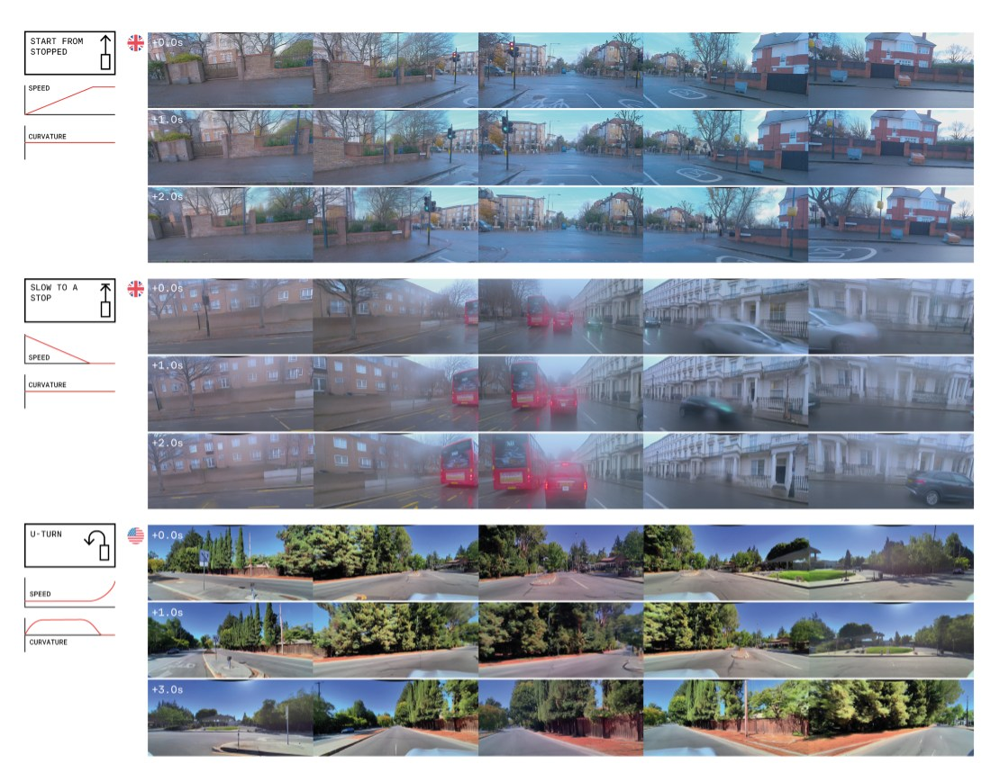
図8：行動に基づく生成。GAIA-2 は、指定された速度と曲率のプロファイルから多様なシーンを合成する。元の動画入力がドロップアウトされているにもかかわらず、各シナリオは文脈的に尤もらしい。
図中ラベル：START FROM STOPPED＝停止からの発進、SLOW TO A STOP＝減速して停止、U-TURN＝U ターン、SPEED＝速度、CURVATURE＝曲率、+0.0s〜+3.0s＝経過時間（秒）
時間的一貫性。世界モデルの時間的一貫性を評価するため、Frechet Video Motion Distance（FVMD）［30］を用いる。この指標は、生成動画と正解動画について、明示的なキーポイントの動き特徴の分布を比較する。この指標は、FVD［31］と比べて、時間的一貫性に関する人間の選好とより整合していることがわかった。
動的エージェントの条件付け。3D バウンディングボックス（我々の条件信号）の射影と、生成動画に対して OneFormer［32］で得たセグメンテーションマスクとを比較することで、動的エージェントの忠実度を評価する。次に、クラスごとの Intersection-over-Union（IoU）を計算し、生成時にモデルが動的エージェントの空間的・カテゴリ的な指定にどの程度従っているかを測定する。
図13 に、評価指標と検証損失を示す。検証損失とその他の指標は、\( n = 1024 \) サンプルを用いてゼロからの生成タスクで評価する。サンプルサイズが小さいことによるノイズはあるものの、すべての指標が学習を通じて改善傾向を示している。特筆すべきことに、検証損失は人間の選好と最も強い相関を示しており、知覚的な品質の有用な代理指標となっている。
動画生成モデル。動画生成モデルにおける最近の進歩は、主に次元削減によって得られる潜在表現を活用するモデルによって推進されてきた。これらの表現は連続［1, 33］または量子化［3, 4］のいずれでもよく、動画生成の成功は、これらの表現が時空間情報をどれだけ効率的に捉えるかに大きく依存する。主要な課題の 1 つは、潜在空間への写像と潜在空間からの写像が、視覚的忠実度と意味的整合性の両方を保つことを保証する点にある。大規模データセットへのスケーリングは汎化を改善する［2］が、視覚的リアリズムと時間的一貫性の両方を保つことには依然として課題が残っている。
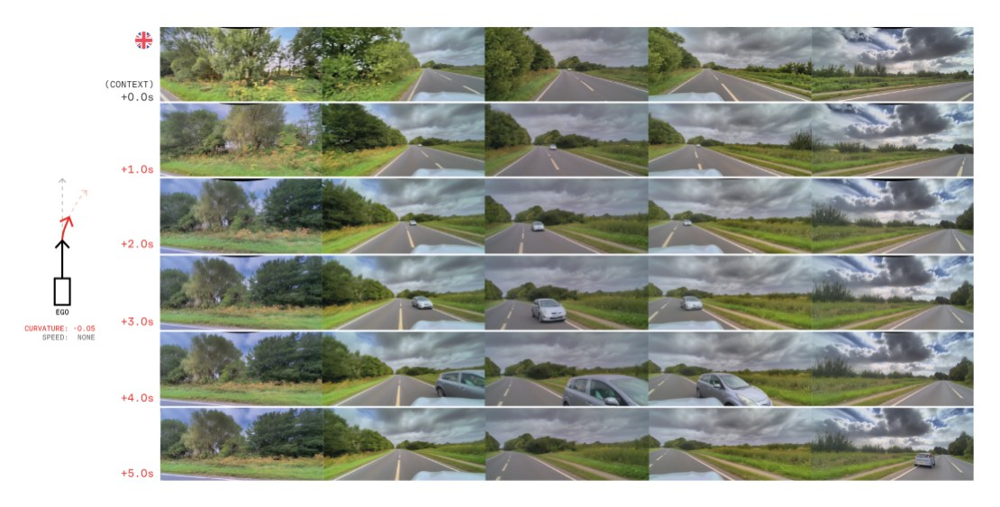
図9：自車起因の安全上重要なシナリオ。安全でない行動による条件付けを適用することで、GAIA-2 は対向車線へのステアリングといった危険な状況を生成できる。実動画のフレームをコンテキストとして与え、GAIA-2 は新しい行動条件付けのもとで、これらの開始フレームからロールアウトする。この例では、右向きの曲率を条件とすることで自車のステアリングを制御する。GAIA-2 が多様な結果を複数生成できるよう、速度はドロップアウトしている。自車が対向車線へ急に進路を変えながら減速している点に注目されたい。対向車は自車を避けるために急ハンドルを切っている。
図中ラベル：(CONTEXT)＝（コンテキスト）、+0.0s〜+5.0s＝経過時間（秒）、EGO＝自車、CURVATURE: -0.05＝曲率：-0.05、SPEED: NONE＝速度：なし（指定なし）
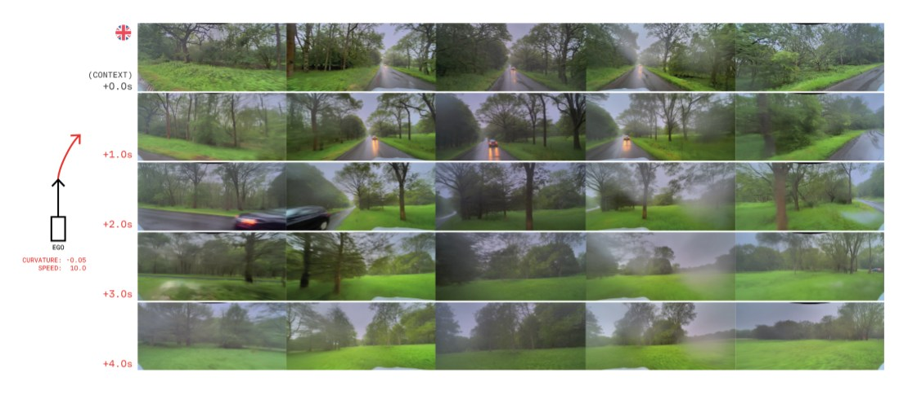
図10：極端な汎化挙動。高速かつ強い曲率を条件とすると、GAIA-2 は道路外への軌跡を外挿し、野原や森へ乗り入れるといった稀な振る舞いを捉える。
図中ラベル：(CONTEXT)＝（コンテキスト）、+0.0s〜+4.0s＝経過時間（秒）、EGO＝自車、CURVATURE: -0.05＝曲率：-0.05、SPEED: 10.0＝速度：10.0
量子化トークンを用いる自己回帰型およびマスク型の生成モデルは、時間的依存関係と動きのダイナミクスの強力なモデリングを示してきた［34, 35, 36, 37, 38, 39, 40, 41, 42］。しかし、その逐次的な生成過程は推論の遅さと誤差の蓄積をもたらし、長いシーケンスや複雑なマルチエージェントのシーンに対するスケーラビリティを制限しうる。対照的に、潜在拡散モデルは、反復的なデノイズを用いて動画シーケンス全体を生成する、より並列化しやすい代替手段を提供する。Stable Video Diffusion［43］、DIAMOND［44］、Sora［45］、MovieGen［20］、Gen-3［46］、Cosmos［2］を含むこれらのモデルは、特にオープンドメインの設定において、テキストから動画、画像から動画のタスクで目覚ましい品質を達成している。
しかし、これらの研究の多くは、視覚的な美しさとドメインに依存しない生成を優先しており、シーン要素やエージェントの振る舞いに対する構造化された制御のサポートは限られている。このため、空間と時間にわたる精密で意味的かつマルチモーダルなシーン制御を必要とする応用（自動運転など）には適していない。この文脈において、GAIA-2 は、高忠実度の生成と、安全性が重要なシステムに求められるドメイン固有の制御性との間のギャップを埋めることを目指している。
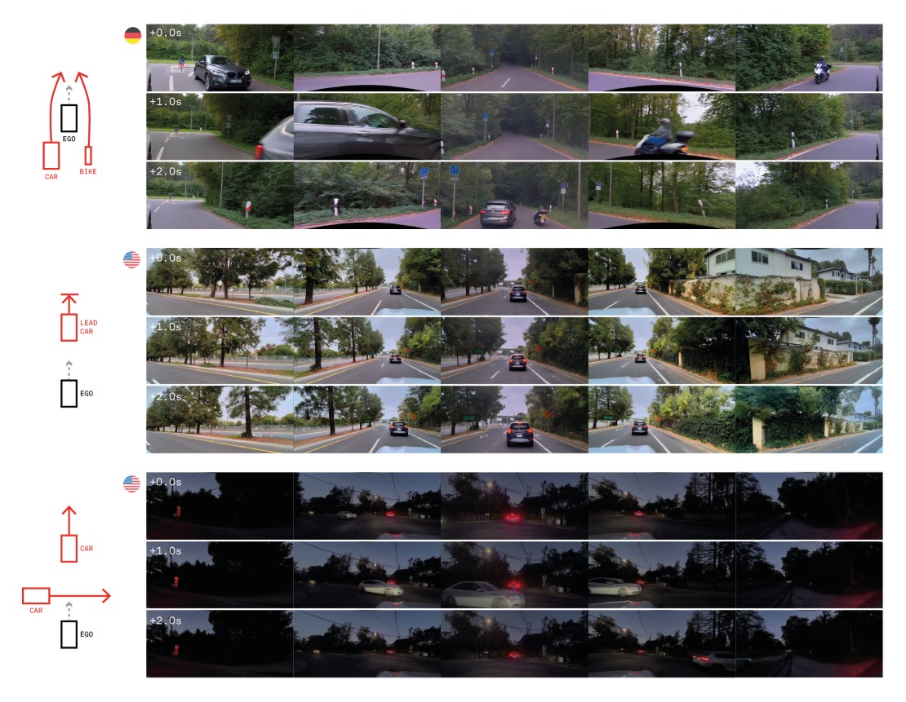
図11：他エージェント起因の安全上重要なシナリオ。3D バウンディングボックスによる条件付けにより、動的エージェントをきめ細かく制御でき、急ブレーキ、追い越し、交差点での高速通過といった危険な振る舞いのシミュレーションが可能になる。
図中ラベル：EGO＝自車、CAR＝乗用車、BIKE＝二輪車、LEAD CAR＝先行車、+0.0s〜+2.0s＝経過時間（秒）
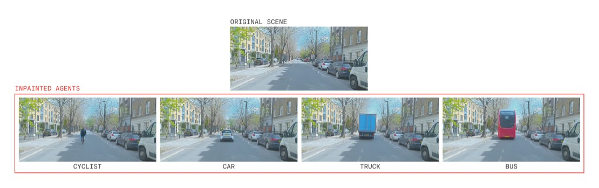
図12：エージェントのインペインティング。GAIA-2 は、3D バウンディングボックスによる条件付けに誘導されて、動画のマスク領域に動的エージェントを挿入できる。背景の一貫性と意味的なリアリズムは保たれる。
図中ラベル：ORIGINAL SCENE＝元のシーン、INPAINTED AGENTS＝インペインティングで挿入したエージェント、CYCLIST＝自転車、CAR＝乗用車、TRUCK＝トラック、BUS＝バス
自動運転における生成世界モデル。汎用の動画生成とは異なり、自動運転のための生成世界モデルは、マルチエージェントの相互作用、自車の運動の制御、環境の多様性、マルチカメラの整合性という、より厳しい要件を満たさなければならない。この分野の初期の研究には、時間的一貫性を改善するために動画拡散デコーダを備えた離散世界モデルにおいて、テキストと自車の行動による条件付けを導入した GAIA-1［5］がある。CommaVQ［47］も同様に、自車の運動を制御するために離散トークン上の因果的 Transformer を活用した。これらの手法は制御性に向けた重要な一歩を踏み出したが、多くの場合、単一カメラの設定と、行動またはテキストによる条件付けを介した部分的な制御性を対象としており、包括的な運転シミュレーションへの適用性は限られていた。
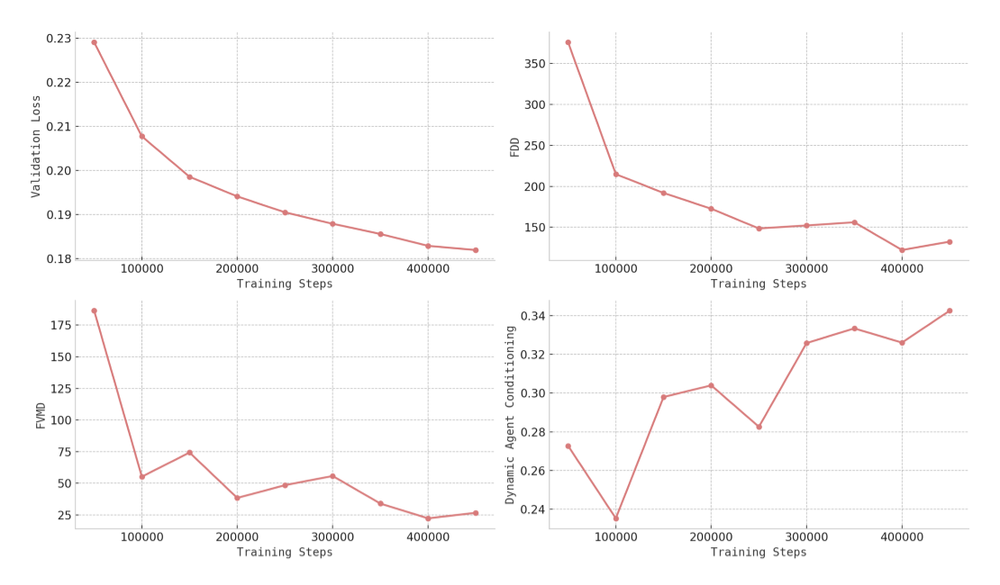
図13：検証損失とその他の評価指標（\( n = 1024 \) サンプルで評価）。検証損失は人間の知覚的な選好とよく相関することがわかった。
図中ラベル：Validation Loss＝検証損失、Training Steps＝学習ステップ数、Dynamic Agent Conditioning＝動的エージェントの条件付け（IoU）
その後の手法は、より高忠実度の生成のために潜在拡散を採用し、より柔軟な制御を導入した。DriveDreamer［6］は 3D バウンディングボックス、HD マップ、自車の行動を条件とする潜在拡散モデルを採用し、さらに未来の自車の行動を予測する行動デコーダを組み込んでいる。Drive-WM［7］はこの手法をマルチカメラ設定（自車を囲む最大 6 台のカメラ）へ拡張し、自車の行動、動的エージェント、および天候や照明といった環境条件に対する制御性を導入している。UniMLVG［48］も同様に、テキスト、カメラパラメータ、3D バウンディングボックス、HD マップを条件とするマルチビュー生成を可能にし、MaskGWM［49］は UniMLVG を拡張してより長い動画生成をサポートしている。Vista［8］は高解像度で長時間の動画を生成するために潜在拡散を用い、Delphi［50］はデータ駆動型の手法で運転モデルの失敗ケースへと動画生成を誘導し、合成データの学習上の有用性を高めている。より最近では、GEM［51］がシーン制御をさらに一般化して自車の運動、物体のダイナミクス、さらには人間の姿勢まで含めており、人間の動作合成やドローンのナビゲーションといった領域にわたるより広い適用可能性を示唆している。最近の一連の研究では、4D の幾何を考慮した生成が探究されている。DriveDreamer4D［9］は、動画生成モデルを用いて新しい軌跡に沿った動画を合成し、実映像と生成映像を組み合わせて、閉ループシミュレーションのための 4D Gaussian Splatting モデルを最適化する。同様に、DreamDrive［52］は生成的な事前分布を活用して、実環境（in-the-wild）の運転データから高品質な 4D シーンを構築する。
これらの進歩にもかかわらず、これらの解決策の多くは、現実的な運転シミュレーションの要件の一部にしか対処していない。単一カメラの設定に限定されているもの、構造化されたエージェントレベルの制御を欠くものがあり、マルチビュー生成とエージェントレベルの意味内容を単一のフレームワークに統合しているものはほとんどない。加えて、多くは、シミュレーションループにおけるデータ拡張とシナリオの変化に不可欠な、インペインティングや狙ったシーン修正といったきめ細かな編集タスクをサポートしていない。
これらの限界を動機として、GAIA-2 は、以下を統合した統一的な潜在拡散フレームワークとして設計されている。
連続潜在表現と、地理的・環境的に多様なデータセットでの大規模学習を組み合わせることで、GAIA-2 は視覚的忠実度とシナリオの制御性の両方を実現する。GAIA-2 は、汎用の拡散モデルと自動運転のドメイン固有のニーズ、すなわち頑健でスケーラブルな学習と評価のために現実的で制御可能なマルチビュー運転シーンをシミュレートする能力との間にある、重大なギャップを埋めるものである。
本論文では、自動運転におけるシミュレーションの多様で厳しい要件を満たすよう設計された、動画生成のためのドメイン特化型潜在拡散モデル GAIA-2 を提示した。GAIA-2 は、マルチカメラの整合性、構造化された意味的条件付け、きめ細かな制御をスケーラブルなアーキテクチャ内で統合することで、生成世界モデリングにおける新たな基準を打ち立てる。本モデルは、最大 5 つのカメラ視点にわたって空間的・時間的な一貫性を保ちながら、自車のダイナミクス、環境的特徴、道路レイアウト、動的エージェントを条件とする制御可能な生成をサポートする。
このアーキテクチャは、空間・時間分解型の潜在拡散世界モデルと、コンパクトで意味的に有意な動画トークナイザを組み合わせ、多様な運転環境にわたる高忠実度の生成を可能にする。GAIA-2 は、ゼロからの生成、自己回帰ロールアウト、空間的インペインティング、実シーンの編集を含む複数の推論モードをサポートし、それぞれが運転シーン空間の体系的な探索を可能にする。本モデルは、典型的なシナリオに加えて稀で安全上重要なシナリオの生成にも優れており、それにより自動運転システムにおけるデータの多様性、シナリオの網羅性、検証の厳密さを大幅に向上させる。
シミュレーションにおける制御性とシーンの多様性をスケールさせることで、GAIA-2 は、実世界データの制約と、頑健な AI 運転モデルの学習・評価に対する増大する要求との間のギャップを埋める。そうすることで、反復サイクルの加速、分布外の条件への汎化の改善、複雑なロングテールのシナリオにわたる AI エージェントのストレステストのための強力なツールとして機能する。
今後の課題。GAIA-2 は大きな前進であるが、いくつかの研究の方向性が未解決のまま残っており、本研究の今後の改良を導くことになる。（i）すべての生成モデルと同様に、GAIA-2 は、特に長期または複雑なシナリオにおいて、時折、時間的または意味的な不整合を生じる。より優れた失敗検出、改良モデル、制約を考慮したサンプリングによって動画生成の信頼性と一貫性を改善することは重要な課題である。（ii）GAIA-2 は並列化された生成を可能にするが、リアルタイムまたはほぼリアルタイムの動画合成は依然として計算負荷が高い。今後の研究では、実世界のパイプラインへの導入可能性を高めるために、モデル蒸留、効率的な Transformer の変種、推論時の高速化手法を探究する。（iii）豊富な条件付けをサポートしているものの、今後の取り組みでは、より豊かなエージェントの振る舞いのモデリング、より微妙な環境条件、自由形式の自然言語による制御を目指す。稀で安全上重要なイベント、特に人間のエージェント、複雑なインフラストラクチャ、社会的相互作用を含むイベントによる学習データセットのさらなる充実は、現実的なシミュレーションの限界を押し広げるだろう。
これらの方向性が一体となって、GAIA-2 とその後継が、安全で頑健かつ汎化可能な自律システムの開発における中核インフラとしての生成モデルの役割を前進させ続けることを確かなものにするだろう。
著者らは、本研究を可能にする貴重な貢献をしてくれた多くの方々に感謝の意を表する：Alex Persin, Ana-Maria Marcu, Aniruddha Kembhavi, Benoit Hanotte, Evgenii Kashin, Francesca Iovu, Giacomo Gallino, Giulio D'Ippolito, Jeremy Plassmann, Lorenzo von Ritter, Mohamed Nabil, Nikhil Mohan, Oleh Chernov, Pragya Kale, Remi Tachet, Rudi Rankin, Sahana Vankatesh, Sarah Belghiti, Sofía Dudas, Tilly Pielichaty, Vassia Simaiaki, Victor Delépine, Vincent Micheli, Zak Murez。
参考文献は原文のまま掲載した。